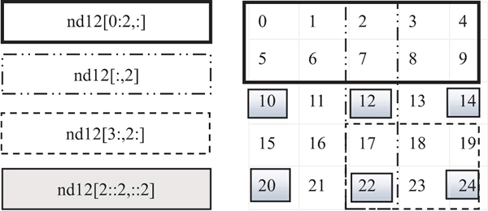

首页 > 编程笔记
NumPy ndarray数组元素的获取
生成 ndarray 数组后，如何读取我们所需要的数据呢？在 NumPy 中，既可以获取 ndarray 数组的单个元素，也可以获取一组元素（也即切片），这与 Python 中的列表（list）和元组（tuple）非常类似。
请看下面的代码：
获取数组中的部分元素除了通过指定索引标签来实现外，还可以通过使用一些函数来实现，如通过random.choice函数从指定的样本中随机抽取数据。
请看下面的代码：
import numpy as np np.random.seed(2019) nd1 = np.random.random([10]) #获取指定位置的数据, 获取第4个元素 nd1[3] #截取一段数据 nd1[3:6] #截取固定间隔数据 nd1[1:6:2] #倒序取数 nd1[::-2] #截取一个多维数组的一个区域内数据 nd2=np.arange(25).reshape([5,5]) nd2[1:3,1:3] #截取一个多维数组中, 数值在一个值域之内的数据 nd2[(nd2>3)&(nd2<10)] #截取多维数组中, 指定的行,如读取第2,3行 nd2[[1,2]] #或nd12[1:3,:] ##截取多维数组中, 指定的列,如读取第2,3列 nd2[:,1:3]如果对上面这些获取方式还不是很清楚，没关系，下面则将通过图形的方式来进一步说明，如图1所示，左边为表达式，右边为表达式获取的元素。注意，不同的边界，表示不同的表达式。

图1：获取多维数组中的元素
图1：获取多维数组中的元素
获取数组中的部分元素除了通过指定索引标签来实现外，还可以通过使用一些函数来实现，如通过random.choice函数从指定的样本中随机抽取数据。
import numpy as np
from numpy import random as nr
a=np.arange(1,25,dtype=float)
c1=nr.choice(a,size=(3,4)) #size指定输出数组形状
c2=nr.choice(a,size=(3,4),replace=False) #replace缺省为True, 即可重复抽取。
#下式中参数p指定每个元素对应的抽取概率, 缺省为每个元素被抽取的概率相同。
c3=nr.choice(a,size=(3,4),p=a / np.sum(a))
print("随机可重复抽取")
print(c1)
print("随机但不重复抽取")
print(c2)
print("随机但按制度概率抽取")
print(c3)
运行结果：
随机可重复抽取
[[ 7. 22. 19. 21.]
[ 7. 5. 5. 5.]
[ 7. 9. 22. 12.]]
随机但不重复抽取
[[ 21. 9. 15. 4.]
[ 23. 2. 3. 7.]
[ 13. 5. 6. 1.]]
随机但按制度概率抽取
[[ 15. 19. 24. 8.]
[ 5. 22. 5. 14.]
[ 3. 22. 13. 17.]]
关注公众号「站长严长生」，在手机上阅读所有教程，随时随地都能学习。内含一款搜索神器，免费下载全网书籍和视频。

微信扫码关注公众号